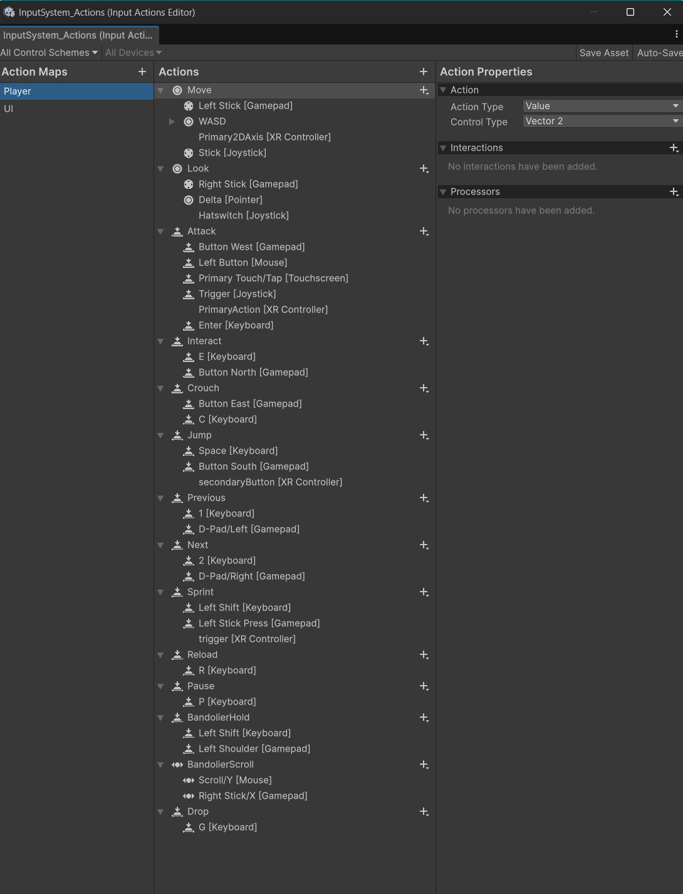
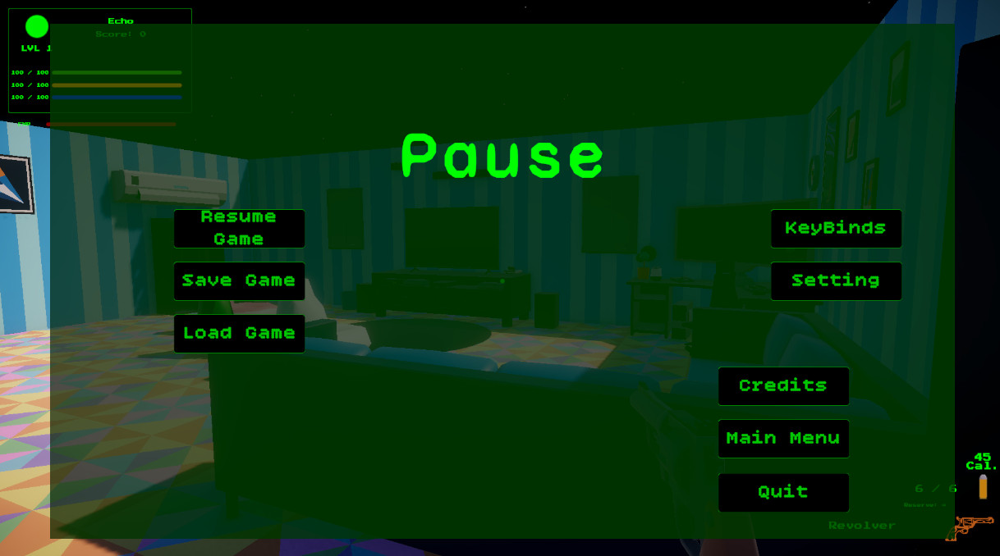
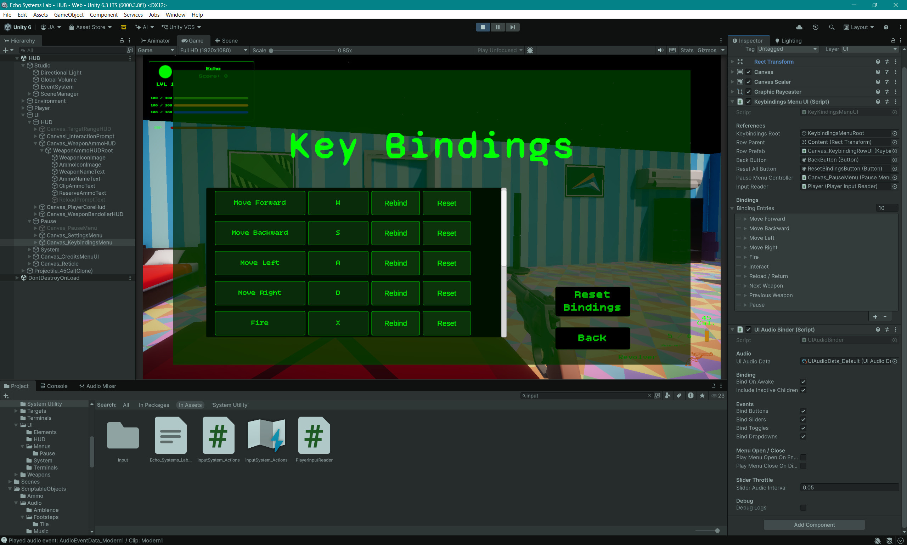
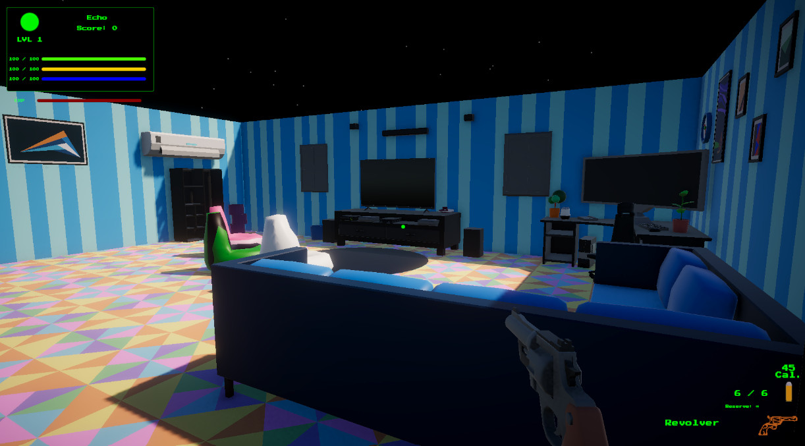
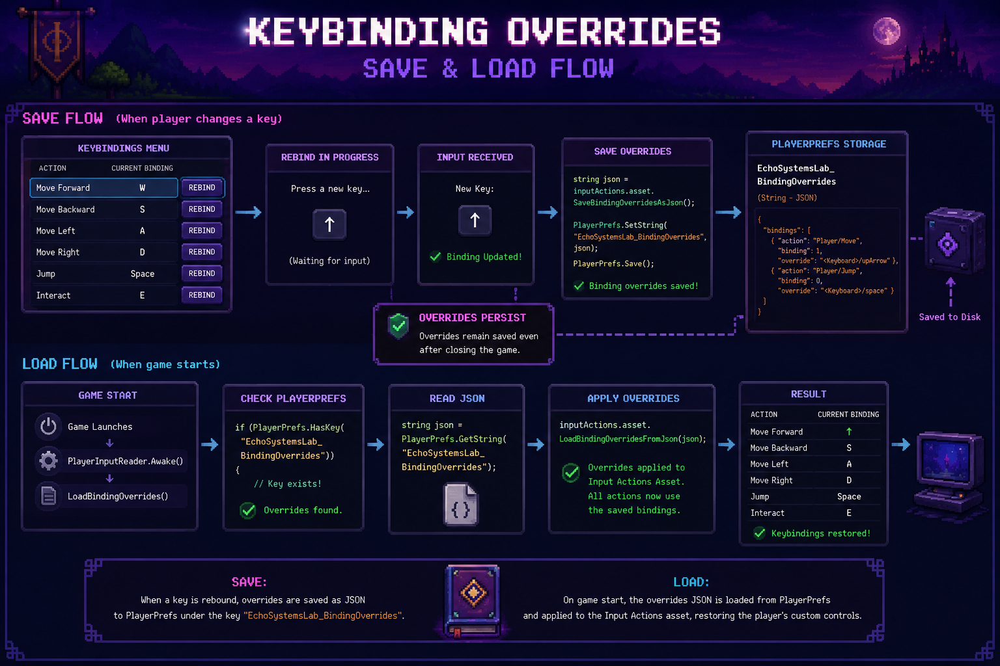

Keybindings Menu
The keybindings menu gives players a readable list of controls with rebind and reset options.
- Rebind UI
- Controls Menu
- Settings
A Unity New Input System layer that centralizes player input, exposes clean gameplay properties, supports saved keybinding overrides, and safely disables movement, combat, interaction, and weapon switching during menus.
This system is the control room for player intent: movement, aiming, firing, reloading, interacting, pausing, cycling weapons, and rebinding controls.
The Input, Keybindings & Pause Flow system wraps Unity's generated input actions inside a focused PlayerInputReader. Gameplay scripts do not need to know the details of the Input Action Asset. They ask for simple values such as MoveInput, LookInput, FirePressed, ReloadPressed, InteractPressed, JumpPressed, and PausePressed.
The input reader also supports gameplay input locking. When the pause menu opens, gameplay input is disabled while pause input remains available. The player can no longer move, fire, reload, interact, or cycle weapons while browsing menus, but they can still unpause.
Keybinding support is handled through saved binding overrides. The keybindings UI can start a rebind operation, update a row display, save overrides to PlayerPrefs, and reset all bindings back to defaults. This gives the project a real settings workflow instead of a static controls screen.
Centralize player input, support rebinding, and protect gameplay systems from receiving input while menus are open.
InputActionAsset → PlayerInputReader → Gameplay scripts → Pause lock → Rebind/save overrides.
Demonstrates New Input System usage, UI tooling, persistent settings, and clean separation between input and gameplay.
Screenshot references for keybinding UI, pause flow, the Input Actions asset, gameplay input locking, and the keybinding row prefab.
The keybindings menu gives players a readable list of controls with rebind and reset options.

Unity's Input Action Asset defines gameplay actions, while PlayerInputReader exposes them through clean properties.

The pause controller disables gameplay input, unlocks the cursor, pauses time, and opens menu panels.

Rows are generated from binding entries so the menu can scale as new actions are added.

Menus can stop movement, weapons, interaction, and weapon cycling without disabling pause input.

Binding overrides are saved as JSON in PlayerPrefs, then restored on startup.
The system turns low-level input actions into readable gameplay signals.
The generated InputSystem_Actions asset contains Player and UI action maps for movement, look, attack, reload, interact, pause, weapon cycling, and future controls.
The input reader exposes readable properties instead of forcing gameplay scripts to call InputAction methods directly.
Movement, weapons, interaction, loadout cycling, and pause flow all read from the same centralized input source.
When paused, gameplay input is disabled while the pause action itself remains available. This prevents the menu from becoming a haunted control sandwich.
The keybindings UI starts interactive rebind operations and updates visible binding labels.
Binding overrides are saved as JSON in PlayerPrefs and loaded back into the Input Action Asset on startup.
Each piece has a clear responsibility in the input and menu-control pipeline.
Creates the generated input actions, exposes readable input properties, gates gameplay input, saves binding overrides, loads binding overrides, and resets bindings.
Builds the keybindings menu from binding entries, connects rows to input actions, starts rebind flows, saves changes, resets individual bindings, and resets all bindings.
Displays one action row with the action name, current binding text, a rebind button, and a reset button.
Opens and closes the pause menu, changes Time.timeScale, locks and unlocks the cursor, disables gameplay input, and routes to settings, keybindings, credits, save, load, main menu, and quit.
Reads movement, look, and jump input through PlayerInputReader rather than calling the input asset directly.
Weapon firing, reload, interaction, dropping, and loadout cycling all use the same input reader, keeping action access consistent across gameplay systems.
Pausing is more than showing a panel. It changes how the whole player stack receives input.
When the pause menu opens, the controller sets the pause root active, pauses time, disables gameplay input, disables player movement, disables interaction, disables weapon use, disables loadout cycling, and unlocks the cursor.
This creates a clean boundary between gameplay and UI. The player cannot accidentally fire, reload, interact with a terminal, or cycle weapons while clicking through the pause menu.
When the player resumes, the same systems are restored. Time returns to normal, gameplay input is enabled, the cursor is locked, and the player regains control.
Menus can safely exist inside gameplay scenes without each gameplay script needing custom pause logic.
Binding overrides make the controls menu persistent instead of cosmetic.
The menu defines entries with a display name, action path, and binding name, such as Move Forward using the Player/Move action and its up binding.
Each entry creates or configures a row prefab that displays the action name and current binding.
When the player chooses rebind, the selected action can listen for the next valid input and apply it as a binding override.
Binding overrides are serialized with SaveBindingOverridesAsJson and stored in PlayerPrefs.
PlayerInputReader loads saved overrides during Awake so custom controls are active immediately.
The player can remove binding overrides and return to the default control layout.
PlayerInputReader is the best code sample for this page because it shows the bridge between generated Input Actions, gameplay-safe properties, and saved rebinding overrides.
//-----PlayerInputReader.cs START-----
using UnityEngine;
using UnityEngine.InputSystem;
public class PlayerInputReader : MonoBehaviour
{
private InputSystem_Actions inputActions;
private bool gameplayInputEnabled = true;
private const string BindingOverridesKey = "EchoSystemsLab_BindingOverrides";
public bool BandolierHeld =>
gameplayInputEnabled &&
inputActions.Player.BandolierHold.IsPressed();
public float BandolierScroll =>
gameplayInputEnabled
? inputActions.Player.BandolierScroll.ReadValue<float>()
: 0f;
public InputActionAsset InputActionAsset => inputActions.asset;
public Vector2 MoveInput
{
get
{
if (!gameplayInputEnabled)
return Vector2.zero;
return inputActions.Player.Move.ReadValue<Vector2>();
}
}
public Vector2 LookInput
{
get
{
if (!gameplayInputEnabled)
return Vector2.zero;
return inputActions.Player.Look.ReadValue<Vector2>();
}
}
public bool JumpPressed =>
gameplayInputEnabled &&
inputActions.Player.Jump.WasPressedThisFrame();
public bool InteractPressed =>
gameplayInputEnabled &&
inputActions.Player.Interact.WasPressedThisFrame();
public bool DropPressed =>
gameplayInputEnabled &&
inputActions.Player.Drop.WasPressedThisFrame();
public bool FirePressed =>
gameplayInputEnabled &&
inputActions.Player.Attack.WasPressedThisFrame();
public bool FireHeld =>
gameplayInputEnabled &&
inputActions.Player.Attack.IsPressed();
public bool ReloadPressed =>
gameplayInputEnabled &&
inputActions.Player.Reload.WasPressedThisFrame();
public bool CycleNextWeaponPressed =>
gameplayInputEnabled &&
inputActions.Player.Next.WasPressedThisFrame();
public bool CyclePreviousWeaponPressed =>
gameplayInputEnabled &&
inputActions.Player.Previous.WasPressedThisFrame();
public bool PausePressed =>
inputActions.Player.Pause.WasPressedThisFrame();
private void Awake()
{
inputActions = new InputSystem_Actions();
LoadBindingOverrides();
}
private void OnEnable()
{
inputActions.Player.Enable();
inputActions.UI.Enable();
}
private void OnDisable()
{
inputActions.Player.Disable();
inputActions.UI.Disable();
}
public void SetGameplayInputEnabled(bool enabled)
{
gameplayInputEnabled = enabled;
}
//-------------------------------------------------------------------------
//-------------------------Key Bindings Helpers----------------------------
//-------------------------------------------------------------------------
public InputAction FindAction(string actionPath)
{
if (inputActions == null)
return null;
return inputActions.asset.FindAction(actionPath, false);
}
public void SaveBindingOverrides()
{
string json = inputActions.asset.SaveBindingOverridesAsJson();
PlayerPrefs.SetString(BindingOverridesKey, json);
PlayerPrefs.Save();
Debug.Log("Binding overrides saved.");
}
public void LoadBindingOverrides()
{
if (!PlayerPrefs.HasKey(BindingOverridesKey))
return;
string json = PlayerPrefs.GetString(BindingOverridesKey);
inputActions.asset.LoadBindingOverridesFromJson(json);
Debug.Log("Binding overrides loaded.");
}
public void ResetBindingOverrides()
{
inputActions.asset.RemoveAllBindingOverrides();
PlayerPrefs.DeleteKey(BindingOverridesKey);
PlayerPrefs.Save();
Debug.Log("Binding overrides reset.");
}
//-------------------------------------------------------------------------
//-------------------------Optional Helpers--------------------------------
//-------------------------------------------------------------------------
public bool HasBandolierScrollInput(float threshold = 0.01f)
{
return Mathf.Abs(BandolierScroll) > threshold;
}
}
//-----PlayerInputReader.cs END-----This system prevents input from becoming scattered across every gameplay script.
Without an input wrapper, every gameplay script would need to know about the generated Input Action Asset. That makes refactors harder because movement, weapons, interaction, menus, and future systems all depend on the same low-level generated structure.
PlayerInputReader keeps gameplay scripts simple. Movement reads MoveInput and LookInput. Weapons read FirePressed, FireHeld, and ReloadPressed. Interaction reads InteractPressed. The pause menu reads PausePressed and controls whether gameplay input is available.
The binding override helpers also turn rebinding into a project-level feature. Players can customize controls, save them, reload the game, and keep their preferred layout.
Gameplay systems would need direct knowledge of action maps, generated classes, and raw input calls.
Gameplay systems read simple properties from one centralized input reader.
Cleaner scripts, safer pause behavior, saved rebinds, and a scalable input foundation for future systems.
Input architecture is invisible when it works, but it touches every playable system.
Shows practical usage of Unity's action-based input workflow with generated actions and clean runtime access.
Keeps input access consistent across movement, weapons, interaction, pause, loadout, and future systems.
Demonstrates player-facing control customization with saved binding overrides.
Shows how menus can disable gameplay input without breaking pause and UI navigation.
Binding override JSON is saved through PlayerPrefs and restored on startup.
New actions, UI rows, control schemes, and gameplay systems can plug into the same input gateway.
Input and pause flow support nearly every other gameplay feature in Echo Systems Lab.
Weapon firing, reload, dry fire, and loadout cycling all read gameplay actions through PlayerInputReader.
UI audio, menu feedback, pause menus, settings sliders, and gameplay events all benefit from clean input state.
Interaction input opens the mission terminal and pause flow safely disables gameplay while menu panels are active.